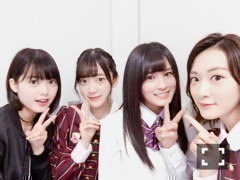
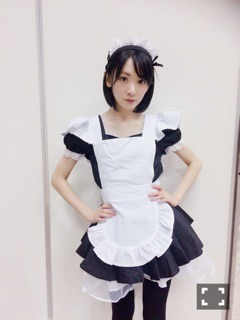

| 2016/11 17 Thu | まいちゅんが隣で爆睡中 |
年末のにおいがしてきましたね〜
冬って感じの気候になってきましたし、
温泉が恋しい季節です(*´꒳`*)
さぁ、
11月9日発売になりました
乃木坂46
16枚目シングル
サヨナラの意味
皆さんのお陰で、
乃木坂初の
ミリオン達成しました！！！
ミリオンと聞いて、
えっ？
って固まりました。
だって、
なかなかなかなかなかなかなかなか出来る事ではありません。
しかも、このご時世、
いろんな事がありますが、
乃木坂の曲を聴きたいと思って手にとってくださった方がそれだけ増えたのだと
素直に嬉しいです！！

テレビでもパフォーマンスする機会、
年の暮れに向けて増えていくと思います！！
ななみんとも、
ひとつ、ひとつが最後のパフォーマンスになります。
ひとつ、ひとつ
最高にしていきたいと思います！！
皆さん、改めて本当にありがとうございます！！
気を引き締めて、
乃木坂46をまた素晴らしいエンタテインメントを生み出せるグループにしたいです！！
頑張ります！！
大人生駒ちゃん
話題に取り上げてくれた全ての皆様ありがとうございます

いやはや、嬉しいでございます。
AKB新聞さんの取材をこのメンツでしたよ

みおな、ももちゃん、生駒ちゃん
3人とも地方の田舎出身
いきなりセンターに立たされた
ちょいと変わった子
っていうのが共通点かな？笑
ももちゃん、これからよろしくね〜
それにしても、
若いわ笑
生駒ちゃん、、、
自分で言うの変だけど、
成長した


偶然通りかかったてちも含めver.
皆様、
保存今の内よ笑

15枚目ラストの握手会は
メイドりなりなが来たよっ
何回萌え萌えきゅんしたんだろ。、笑
また、りなりな出現するからね〜
どこに出るかわかんないからね〜
出会えた人はラッキーだねっ
ご主人様？
どこにりなりな当たるかドキドキしながら会いに来てくださいね？
りなりなずっとお待ちしております

。。。。。5年も経てば、
人は、なんでも出来るようになるんだな笑
今日、ベストヒット歌謡祭見てくださってありがとうございました
まゆゆさんに会えたよ〜(*´꒳`*)♡♡♡♡
写真集サイン入りの頂きました♡♡♡
やはり、まゆゆさんは天使
年末は会える機会増えるからすごく嬉しい
ではっ！
へばなっ☆彡
コメント(518)
2016/11/17 22:00